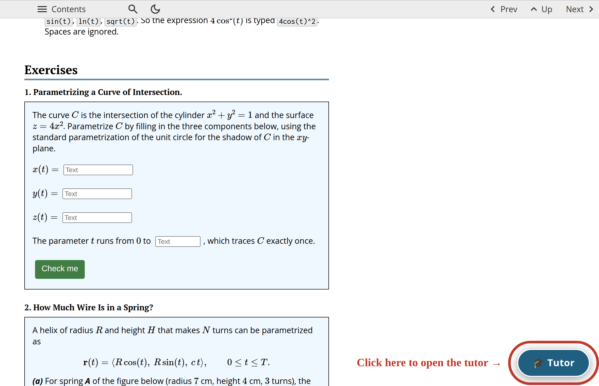
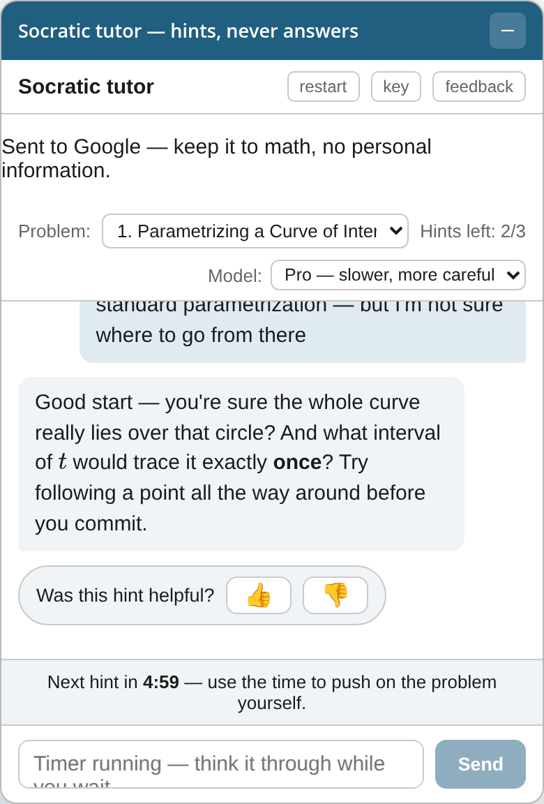

Using the AI Tutor.
Stuck? A Socratic AI tutor is available on every assignment page. It knows the problems on the page and will coach you with questions and gentle hints — but it will never give away an answer. Here is how to use it.
Opening the tutor. On an assignment page, click the round “Tutor” button in the lower-right corner. A chat panel opens and stays in place as you scroll, so you can read a problem and talk to the tutor at the same time. The dash button in the panel’s title bar minimizes it back to the button.

The tutor is available on each of the ten assignment pages. The review problem sets do not have it: those sets are practice for the exams, where you will be entirely on your own.
One-time setup. The first time you open the tutor it asks for a free Google AI Studio key (this takes about a minute):
-
Go to aistudio.google.com/apikey and sign in with a personal Google account — a regular Gmail. Do not use your
@scu.eduaccount: the university has this service turned off, and you will see “Your account is managed by an organization.” -
Click Create API key and copy it.
-
Paste it into the tutor.
The key is stored only in your own browser and is sent only to Google; this site never sees it. Treat the key as yours alone: anyone who has it can spend your free quota, so do not share it or paste it anywhere else.
Privacy: what to keep out of the chat. Everything you type into the tutor is sent to Google and handled under Google’s terms, not the university’s. On the free tier your conversations may be read by people at Google and used to improve their products, and they are not covered by the protections your school records have. Nothing you type is private, so treat the panel as a public place and keep it to mathematics.
-
Do not type anything that identifies you: your name, student ID, SCU email, phone number, address, or date of birth. The tutor does not need to know who you are in order to help with an integral.
-
Do not type anything about anyone else — a classmate’s name, their work, or their grade. That is their information to share, not yours.
-
Keep out anything sensitive or unrelated to the course: health, finances, immigration or visa status, family matters, passwords, or anything you would not want quoted back to you.
-
Before you paste or upload, look at what you are sending. A screenshot or a photo of your work can carry your name, a page header, or a browser tab in the background.
-
The tutor is a study aid, not a counselor and not the instructor. If something personal is affecting your work in this course, bring it to office hours or to the university’s student services instead — those conversations belong with a person, and they stay confidential.
None of this is a reason to avoid the tutor. Ask it anything about the mathematics — what you tried, where you are stuck, why a step feels wrong. Just keep yourself, and everyone else, out of the transcript.
Working with the tutor. Choose the problem you are working on from the drop-down at the top of the panel, then tell the tutor what you have tried so far — the more of your own thinking you show, the more useful its questions become. The tutor can nudge you toward a starting point, and it can point you to sections and worked examples in these notes to study.
If your answer is wrong, the tutor will tell you so and help you understand why it is wrong: which step breaks, what misconception is behind it, and what picture or small example will let you see the failure for yourself. Note that this requires showing your reasoning — a bare answer with no work, right or wrong, will simply get asked for the thinking behind it. And what the tutor will not do is tell you how to correct an error — no fixed-up step, no “instead, you should…” Finding the right path once you understand why the old one fails is your part of the work.

Two models. Next to the problem picker is a “Model” drop-down offering Pro and Flash. Pro is the default: it thinks before it answers, so it takes a few seconds longer and is better at staying in the role of a tutor rather than a solutions manual. Flash replies almost instantly. Either will coach you and neither will hand you an answer; switching between them costs nothing and does not disturb your conversation or your hint count. Try both — and tell me which you prefer.
Hints are limited on purpose. The point of the tutor is to get you unstuck, not to walk you to the answer, so hints are deliberately scarce. The exact rules:
-
You get at most three hints per problem, total — the budget never resets. The panel always shows how many you have left on the problem you selected (“Hints left: 2/3”).
-
Every reply from the tutor costs a hint — there are no free ones. Lead with what you have tried, so each reply can meet your actual thinking instead of spending itself asking for it.
-
After each hint the tutor locks for five minutes, with a countdown shown in the panel. There is one shared timer: the wait applies across all problems, so switching problems does not skip it. Use the five minutes to push on the problem yourself — that is what the pause is for.
-
Restarting the conversation, reloading the page, or switching problems does not refill hints. Spend them thoughtfully — full solutions will be published after the due date.
-
When your hints for a problem run out, bring your work to office hours — working through it together is exactly what office hours are for.
Tell me how it is going. Under every hint is a single question — “Was this hint helpful?” — with a thumb up and a thumb down. One tap is the whole thing, and it is the most useful second you can spend on this course: it tells me which hints land and which ones miss, hint by hint. Nothing but your answer and which problem you were on is sent.
For anything longer there is the “feedback” button at the top of the panel, which sends me a short note about how the tutor is working for you: whether it helped, and — in a box you can write as much as you like in — what would make it better. Tapping the thumb down offers it too. All of it is anonymous, it has nothing to do with your grade, and the tutor itself never sees it. If you want me to see the exchange you just had, there is a box to attach it; it is off unless you tick it. The tutor is new, and what you write is how it gets better.
Finally, know what the tutor will and will not do. It will not state answers, complete a solution, or turn a wrong answer into a right one — no matter how you ask. There is exactly one way to get an answer confirmed: state your conclusion together with your own justification. If your reasoning is sound and complete, the tutor will tell you that you have it; if there is a gap, it will point at the gap and let you close it. A bare answer, right or wrong, earns nothing.